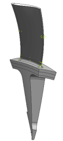

Define mesh mating conditions
Each polygon body is meshed separately. To ensure continuity of the meshes at the polygon body interfaces, apply mesh mating conditions.
 Mesh Mating (Home tab→Connections group)
Mesh Mating (Home tab→Connections group)
-
Type
Automatic Creation

When you set the Type to Automatic Creation, you do not need to select the polygon bodies. The software selects them.
-
OK
-

 Simulation Navigator
Simulation Navigator
-

 Connection Collectors (expand)
Connection Collectors (expand)
-
MMC Collection (expand)
-
Examine the mesh mating conditions (MMCs).